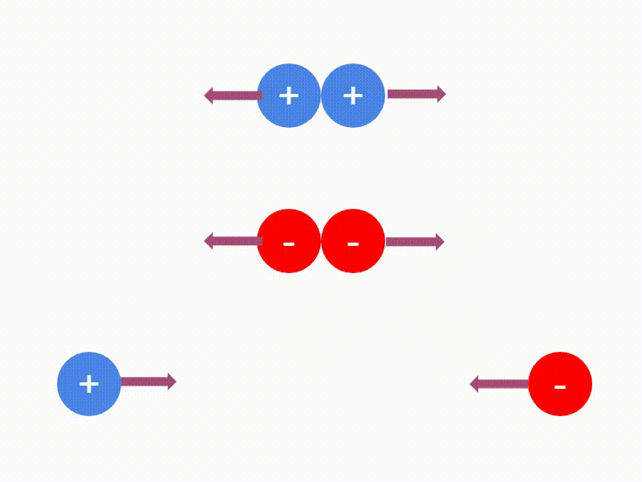

Electromagnetismo: Definición y clasificación
ElectromagnetismoEl electromagnetismo es la rama de la física que estudia los fenómenos eléctricos y magnéticos. El electromagnetismo describe la interacción de partículas cargadas con campos eléctricos y magnéticos. La interacción electromagnética es una de las cuatro fuerzas fundamentales del universo conocido.
El electromagnetismo se divide en dos ramas principales.
1.- ElectricidadLa electricidad es el estudio de los fenómenos producidos por cargas eléctricas y se divide a su vez en:
a) Electrostática. Es la rama del electromagnetismo que analiza los efectos mutuos que se producen entre los cuerpos como consecuencia de sus cargas eléctricas, es decir, el estudio de las cargas eléctricas en reposo.
b) Electrodinámica. Es la rama del electromagnetismo que analiza los sistemas donde interactúan campos eléctricos y magnéticos con cargas eléctricas en movimiento.
2.- MagnetismoEs el estudio de los fenómenos relacionados con los imanes y el campo magnético.
Carga eléctricaEl filósofo griego Tales de Mileto (640-546 A.c.) observó que el ámbar previamente frotado con una piel de animal adquiría la propiedad de atraer objetos pequeños, como hojas secas, trozos de paja y plumas. El nombre griego para el ámbar es elektron, del cual se derivó la palabra electricidad.
El científico francés Charles Francois du Fay (1698-1739) fue el primero en identificar que había dos tipos cargas eléctricas, al observar que una pieza de vidrio cargada eléctricamente atraía a ciertos objetos cargados eléctricamente, pero repelía a otros también cargados.
La carga eléctrica es la propiedad que poseen algunos cuerpos cuando, al ser frotados, son capaces de atraer objetos ligeros. En otras palabras, es una propiedad física intrínseca de algunas partículas subatómicas que se manifiesta mediante fuerzas de atracción y repulsión entre ellas.
Empleando la convención propuesta por Benjamín Franklin: la carga eléctrica adquirida por el vidrio se denomina carga positiva y la adquirida por el ámbar se denomina carga negativa.
Experimentos posteriores en los cuales se colocaban dos esferas con carga positiva, estas se repelían, del mismo modo, al colocar dos esferas con carga negativa, estas también se repelían, pero cuando una de las esferas tenía carga negativa y la otra esfera tenía carga positiva, las esferas se atraían.
A partir de estas observaciones se puede concluir que:
Primera ley de la electrostática. Las cargas del mismo signo se repelen y las cargas de signo contrario se atraen.
Se puede observar que entre las cargas eléctricas y cuerpos cargados eléctricamente surgen fuerzas de atracción o fuerzas de repulsión.

Para comprender mejor el origen eléctrico de los cuerpos analicemos la estructura de sus átomos. Los átomos están constituidos fundamentalmente por tres tipos de partículas: protones, neutrones y electrones. Los protones y neutrones forman el núcleo del átomo y los electrones se encuentran alrededor de éste. A los protones se les asoció la carga positiva y a los electrones la carga negativa. Los neutrones no tienen carga eléctrica.
Como en el átomo existe igual número de protones que de electrones, la suma de cargas positivas es igual a la suma de las cargas negativas, por esto se dice que el átomo es neutro. Es cierto que los cuerpos están formados por átomos que contienen partículas con cargas eléctricas; sin embargo, sus propiedades eléctricas no se perciben porque las cargas eléctricas de dichas partículas se neutralizan entre sí. Sus propiedades eléctricas se hacen patentes cuando hay un desequilibrio entre las cargas eléctricas, es decir, cuando hay un número mayor o menor de electrones que de protones en algunos de sus átomos.
Cuando el ámbar es frotado en la piel, se transfieren electrones de la piel hacia el ámbar. En el caso del vidrio frotado en un paño de seda, hay una transferencia de electrones del vidrio hacia el paño.
De acuerdo con lo anterior, la carga eléctrica de un cuerpo puede interpretarse como la diferencia aritmética entre las cargas positivas de sus protones y las cargas negativas de sus electrones. Es importante señalar que la carga eléctrica es una propiedad inherente a los protones y electrones así como a otras partículas fundamentales. No puede separarse de tales partículas ni ser examinada por sí sola y no existe sin ellas.
La carga eléctrica se representa por medio de la letra \(q\) y su unidad en el Sistema Internacional de Unidades es el coulomb, o columbio cuyo símbolo es la letra \(C\).
Un coulomb es equivalente a la carga eléctrica de \(6.25 \times 10^{18}\) electrones, es una unidad demasiado grande para algunas cantidades de carga que se presentan en muchas situaciones y fenómenos que son del orden de los:
· milicoulombs (\(mC= 1 × 10^{-3}\, C\)),
· microcoulombs (\(\mu = 1 × 10^{-6}\, C\))
· nanocoulombs (\(nC= 1 × 10^{-9}\, C\))
· picocoulombs (\(pC= 1 × 10^{-12}\, C\)).
La carga eléctrica más pequeña que se puede encontrar en estado libre en la naturaleza es la carga de un electrón (negativa) o de un protón (positiva). La magnitud de esta carga recibe el nombre de carga elemental, se representa por \(e\) y tiene un valor de \(1.60219 \times 10^{-19}\, C\).
De acuerdo con lo anterior el protón tiene una carga eléctrica \(+e\) y el electrón una carga \(-e\). Como la carga eléctrica de un cuerpo se produce cuando éste pierde o gana electrones, se puede concluir que cualquier carga eléctrica de magnitud \(q\) es un múltiplo entero de la carga elemental \(e\), es decir:
\(\displaystyle q=n\cdot e \)
en donde:
\(q\) es la carga eléctrica del cuerpo
\(n\) es un número entero igual al número de electrones o de protones
\(e\) es la carga elemental
En resumen:
Una carga eléctrica es la propiedad que poseen algunos cuerpos cuando, al ser frotados, son capaces de atraer objetos ligeros. Una carga eléctrica se produce al transferir electrones de un cuerpo a otro.
Existen dos tipos de carga eléctrica: Carga eléctrica positiva (+) y carga eléctrica negativa (-).
Un cuerpo tiene carga eléctrica negativa cuando tiene más electrones que protones.
Un cuerpo tiene carga eléctrica positiva cuando tiene menos electrones que protones.
Un cuerpo no tiene carga cuando tiene el mismo número de electrones que de protones, es decir es neutro.
1 carga elemental \(e=1.60219 \times 10^{-19}\, C\)
1 electrón tiene una carga negativa \(-e\), es decir, \(q_e=-1.60219 \times 10^{-19}\, C\)
1 protón tiene una carga positiva \(+e\), es decir, \(q_p=+1.60219 \times 10^{-19}\, C\)
1 neutrón no tiene carga, es decir, \(q_n=0.0\, C\)
\(1\, C = a\, la\, carga \, acumulada\, de\, 6.25 \times 10^{18}\,electrones\)
Ejemplo. En una tormenta eléctrica, un rayo transfiere una carga de 100 C de la nube a la superficie terrestre, ¿Cuántos electrones se transfirieron de la nube a la Tierra?
Datos
\(q = -100\, C\)
\(e=-1.6\times10^{-19}\,C\)
\(n = ?\)
Se coloca un signo negativo al valor de la carga por tratarse de electrones. El valor de \(e\) esta redondeado a dos cifras y es negativo por ser electrones.
Fórmula y sustitución
\(q=n\cdot e\)
\(\displaystyle n=\frac{q}{e}\)
\(\displaystyle n=\frac{-100\,C}{-1.6\times10^{-19}\,C}\)
\(\displaystyle n=62.5\times 10^{19}\, electrones\)
Formas de electrizar un cuerpoExisten diversos procedimientos para cargar eléctricamente un cuerpo, pero sólo se describirán tres:
Carga por frotamientoEste método es el más común para hacer que un cuerpo adquiera una carga eléctrica. La carga por frotamiento se produce al friccionar o frotar un cuerpo con otro. Mediante el frotamiento se proporciona energía suficiente a los electrones del cuerpo en que están más débilmente unidos, de manera que los electrones saltan al otro cuerpo, el cual los gana y queda cargado negativamente, mientras que el primer cuerpo queda cargado positivamente.
Carga por contactoUn cuerpo neutro puede quedar electrizado o cargado eléctricamente si se entra en contacto físico con un cuerpo con carga eléctrica. Si los dos cuerpos se separan más tarde, se observa que ambos quedan cargados con el mismo tipo de carga que tenía el cuerpo con carga eléctrica.
Carga por inducciónEn este método de carga el cuerpo que se quiere cargar eléctricamente no se pone en contacto con el cuerpo con carga eléctrica, ni se frota con otro cuerpo.
Una manera de cargar un cuerpo por inducción consiste acercar una varilla con carga eléctrica positiva a uno de los cuerpos, por ejemplo al cuerpo A, pero sin tocarlo. Los electrones de los átomos del cuerpo de metal son atraídos por la varilla y una parte de éstos se desplaza hacia el extremo del mismo, dejando en el cuerpo B un déficit de electrones. La carga eléctrica de los dos cuerpos se ha redistribuido por inducción. Si los cuerpos A y B se separan en presencia de la varilla, los dos cuerpos quedan cargados con cargas iguales y opuestas. Una vez alejada la varilla, los cuerpos A y B quedan cargados eléctricamente por inducción.

Ley de conservación de la carga eléctricaExperimentalmente, se ha encontrado que, en todos los procesos observados en la naturaleza, la carga eléctrica total de un sistema aislado permanece constante.
En otras palabras: la carga eléctrica no se crea ni se destruye sólo cambia de lugar, ya que puede presentarse un intercambio o movimiento de cargas de un cuerpo a otro, pero no se crea ni se destruye. Con esto se quiere decir que la suma algebraica de todas las cargas eléctricas en el universo permanece constante.
Estas afirmaciones corresponden a enunciados de la ley de conservación de la carga eléctrica.
Materiales conductores y aislantes Los materiales conductores de electricidad son aquellos que:
a) Permiten el paso de las cargas eléctricas.
b) Se electrizan en toda su superficie, aunque sólo se frote un punto de la misma.
c) Sólo pueden cargarse eléctricamente si están aislados.
d) Una vez que se cargan eléctricamente, su carga se distribuye en la superficie del conductor.
Ejemplos: Todos los metales, soluciones de ácidos, bases y sales disueltas en agua, así como el cuerpo humano.
Los materiales aislantes o aisladores o malos conductores de electricidad, también llamados dieléctricos, son aquellos que:
a) No permiten el paso de las cargas eléctricas,
b) Sólo se electrizan en los puntos donde hacen contacto con un cuerpo cargado, o bien, en la parte frotada.
c) Son relativamente fáciles de cargar eléctricamente por frotamiento
Ejemplos: La madera, el vidrio, el caucho, las resinas y los plásticos, la porcelana, la seda, la mica y el papel.
Cabe mencionar que no hay un material 100% conductor ni un material 100% aislante.
Los materiales semiconductores, que constituyen la base de la electrónica moderna, permiten el paso de las cargas eléctricas en una dirección pero no lo permiten el la dirección opuesta. Se utilizan en la construcción de transistores y son de gran importancia en la electrónica.
Ejemplos: el carbón, germanio y silicio contaminados con otros elementos, y los gases húmedos.
Los materiales superconductores, por su parte, son materiales que se convierten en conductores perfectos a bajas temperaturas, cerca de los -273 °C, ofrecen una resistencia casi nula al movimiento de las cargas eléctricas.
Ejemplos: Mercurio, Litio, Titanio, Cadmio.